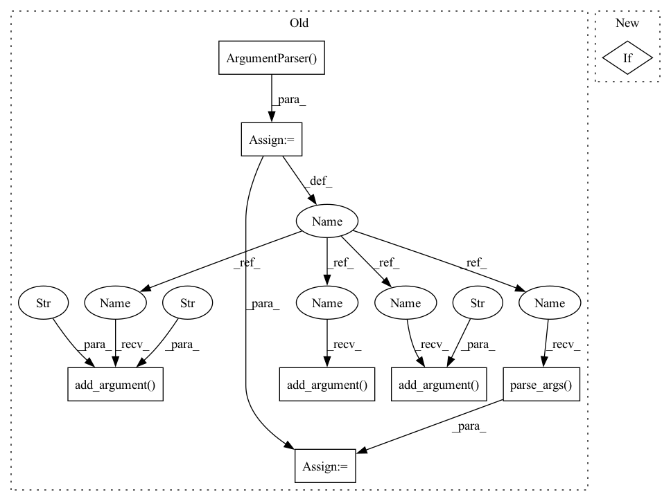

Pattern ID :41786
Before Change
def main():
parser = argparse.ArgumentParser()
parser.add_argument(
"--model-base-dir" ,
"-m" ,
type=str,
default=None,
help="Model directory containing checkpoints and config.",
)
parser.add_argument(
"noisy_audio_files" ,
type=str,
nargs="+",
help="List of noise files to mix with the clean speech file.",
)
parser.add_argument(
"--pf",
help="Postfilter that slightly overattenuates very noisy sections.",
action="store_true",
)
parser.add_argument("--output-dir", "-o", type=str, default=None)
parser.add_argument(
"--compensate-delay",
"-d",
action="store_true",
help="Add some paddig to compensate the delay introduced by the real-time STFT/ISTFT implementation.",
)
args = parser .parse_args()
if args.model_base_dir is None:
args.model_base_dir = os.path.join(
os.path.dirname(df.__file__), os.pardir, "pretrained_models", "DeepFilterNet"
)After Change
args.model_base_dir = os.path.join(
os.path.dirname(df.__file__), os.pardir, "pretrained_models", "DeepFilterNet"
)
if args.logging:
print(f"Using default model at {args.model_base_dir}")
if not os.path.isdir(args.model_base_dir):
raise NotADirectoryError("Base directory not found at {}".format(args.model_base_dir))In pattern: SUPERPATTERN
Frequency: 3
Non-data size: 8
Instances Fragment ID: 117192845
Project Name: rikorose/deepfilternet
Commit Name: c515acc34d20ab3d45e2cd5ccc43e5d3ae324979
Time: 2021-12-07
Author: GIShanshin@sberbank.ru
File Name: DeepFilterNet/df/enhance.py
M Class Name: AnonimousClass
N Class Name: AnonimousClass
M Method Name: main(1)
N Method Name: main(0)
M Parent Class:
N Parent Class:
M File Name: DeepFilterNet/df/enhance.py
N File Name: DeepFilterNet/df/enhance.py
M Start Line: 24
M End Line: 57
N Start Line: 24
N End Line: 32
Before Change
def main():
parser = argparse.ArgumentParser(
description="Please provide a config file and port.")
parser.add_argument(
"config" , help="A config file for nodes. The same format of on-prem provider section at top level.")
parser.add_argument(
"--bind-address" ,
type=str,
required=False,
help="The address to bind. Bind to the address resolved from hostname if not specified.")
parser.add_argument(
"--port" ,
type=int,
required=False,
help="The port on which the Cloud Simulator listens. Default: {}".format(DEFAULT_CLOUD_SIMULATOR_PORT))
args = parser.parse_args()
bind_address = args.bind_address
port = args.port
if bind_address is None:
bind_address = socket.gethostbyname(socket.gethostname())
if port is None:After Change
def main(args):
if args.reload:
reload_config(
args.config, args.bind_address, args.port)
else: Fragment ID: 117192847
Project Name: oap-project/cloudtik
Commit Name: 9dcbc4e4895c090ae228a27e604a55cbb97f96a4
Time: 2023-05-19
Author: haifeng.chen@intel.com
File Name: python/cloudtik/providers/onprem/service/cloudtik_cloud_simulator.py
M Class Name: AnonimousClass
N Class Name: AnonimousClass
M Method Name: main(1)
N Method Name: main(0)
M Parent Class:
N Parent Class:
M File Name: python/cloudtik/providers/onprem/service/cloudtik_cloud_simulator.py
N File Name: python/cloudtik/providers/onprem/service/cloudtik_cloud_simulator.py
M Start Line: 112
M End Line: 137
N Start Line: 135
N End Line: 143
Before Change
class Predictor(cog.Predictor):
def setup(self):
parser = argparse.ArgumentParser()
parser.add_argument("--upscale", type=int, default=2)
parser.add_argument("--arch", type=str, default="clean")
parser.add_argument("--channel" , type=int, default=2)
parser.add_argument(
"--model_path",
type=str,
default="experiments/pretrained_models/GFPGANCleanv1-NoCE-C2.pth",
)
parser.add_argument("--bg_upsampler", type=str, default="realesrgan")
parser.add_argument("--bg_tile", type=int, default=400)
parser.add_argument("--test_path" , type=str, default="inputs/whole_imgs")
parser.add_argument(
"--suffix", type=str, default=None, help="Suffix of the restored faces"
)
parser.add_argument("--only_center_face", action="store_true")
parser.add_argument("--aligned" , action="store_true")
parser.add_argument("--paste_back", action="store_false")
parser.add_argument("--save_root", type=str, default="results")
self.args = parser.parse_args(
["--upscale", "2", "--test_path", "cog_temp", "--save_root", "results"]
)
os.makedirs(self.args.test_path, exist_ok=True)
// background upsampler
if self.args.bg_upsampler == "realesrgan":
if not torch.cuda.is_available(): // CPUAfter Change
if not os.path.exists("realesr-general-x4v3.pth"):
os.system(
"wget https://github.com/xinntao/Real-ESRGAN/releases/download/v0.2.5.0/realesr-general-x4v3.pth -P .")
if not os.path.exists("GFPGANv1.2.pth"):
os.system("wget https://github.com/TencentARC/GFPGAN/releases/download/v1.3.0/GFPGANv1.2.pth -P .")
if not os.path.exists("GFPGANv1.3.pth"):
os.system("wget https://github.com/TencentARC/GFPGAN/releases/download/v1.3.0/GFPGANv1.3.pth -P .") Fragment ID: 117192853
Project Name: tencentarc/gfpgan
Commit Name: 3e27784b1b4eb008d06c04dbbaf6bdde34c4da84
Time: 2022-08-31
Author: wxt1994@126.com
File Name: predict.py
M Class Name: Predictor
N Class Name: Predictor
M Method Name: setup(1)
N Method Name: setup(1)
M Parent Class: BasePredictor
N Parent Class: cog.Predictor
M File Name: predict.py
N File Name: predict.py
M Start Line: 23
M End Line: 77
N Start Line: 27
N End Line: 45
Before Change
def main():
parser = argparse.ArgumentParser()
parser.add_argument(
"--model-base-dir" ,
"-m",
type=str,
default=None,
help="Model directory containing checkpoints and config.",
)
parser.add_argument(
"noisy_audio_files" ,
type=str,
nargs="+",
help="List of noise files to mix with the clean speech file.",
)
parser.add_argument(
"--pf" ,
help="Postfilter that slightly overattenuates very noisy sections.",
action="store_true",
)
parser.add_argument("--output-dir", "-o", type=str, default=None)
parser.add_argument(
"--compensate-delay",
"-d",
action="store_true",
help="Add some paddig to compensate the delay introduced by the real-time STFT/ISTFT implementation.",
)
args = parser.parse_args()
if args.model_base_dir is None:
args.model_base_dir = os.path.join(
os.path.dirname(df.__file__), os.pardir, "pretrained_models", "DeepFilterNet"
)After Change
args.model_base_dir = os.path.join(
os.path.dirname(df.__file__), os.pardir, "pretrained_models", "DeepFilterNet"
)
if args.logging:
print(f"Using default model at {args.model_base_dir}")
if not os.path.isdir(args.model_base_dir):
raise NotADirectoryError("Base directory not found at {}".format(args.model_base_dir)) Fragment ID: 117192854
Project Name: rikorose/deepfilternet
Commit Name: c515acc34d20ab3d45e2cd5ccc43e5d3ae324979
Time: 2021-12-07
Author: GIShanshin@sberbank.ru
File Name: DeepFilterNet/df/enhance.py
M Class Name: AnonimousClass
N Class Name: AnonimousClass
M Method Name: main(1)
N Method Name: main(0)
M Parent Class:
N Parent Class:
M File Name: DeepFilterNet/df/enhance.py
N File Name: DeepFilterNet/df/enhance.py
M Start Line: 24
M End Line: 57
N Start Line: 24
N End Line: 32